Fig. 1 Render of the project
Fig. 2 Living conditions

Fig. 3 Location

Fig. 4 Green analysis

Fig. 5 Transport analysis
Fig. 6 Living conditions
Fig. 7 Seperate public and private spaces

Fig. 8 Modularity
Fig. 9 Program of requirements

Fig. 10 Users of the building with their characteristics

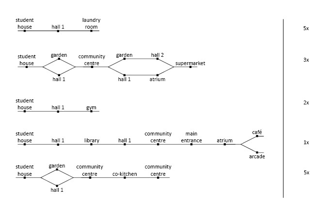
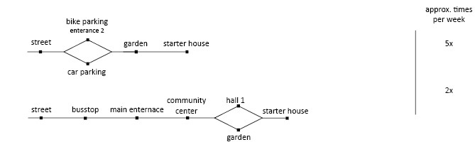
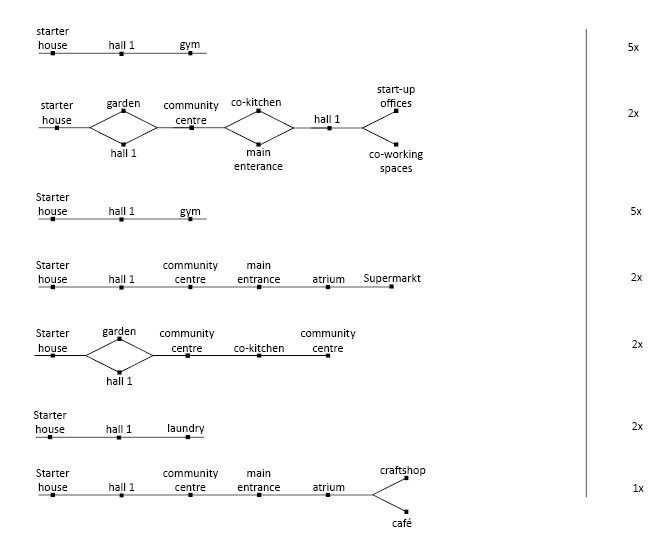


Fig. 18 Metro diagram
Fig. 19 Adjacency matrix
Fig. 20 Relations between spaces

Fig. 21 Voxel size

Fig. 22 Voxelized envelope lowres

Fig. 23 Voxelized envelope highres

Fig. 24 Distance to Ground

Fig. 25 Distance to Ground
Fig. 26 Distance to ground flowchart

Fig. 27 Distance to the Ground
Fig. 28 Distance to ground flowchart

Fig. 29 Noise
Fig. 30 Distance to ground flowchart

Fig. 31 Sun accessibility
Fig. 32 Distance to ground flowchart

Fig. 33 Shadow casting
Fig. 34 Distance to ground flowchart

Fig. 35 Sky view factor
Fig. 36 Distance to ground flowchart

Fig. 37 View on greenery
Fig. 38 Distance to ground flowchart

Fig. 40 Distance to Main Entrance
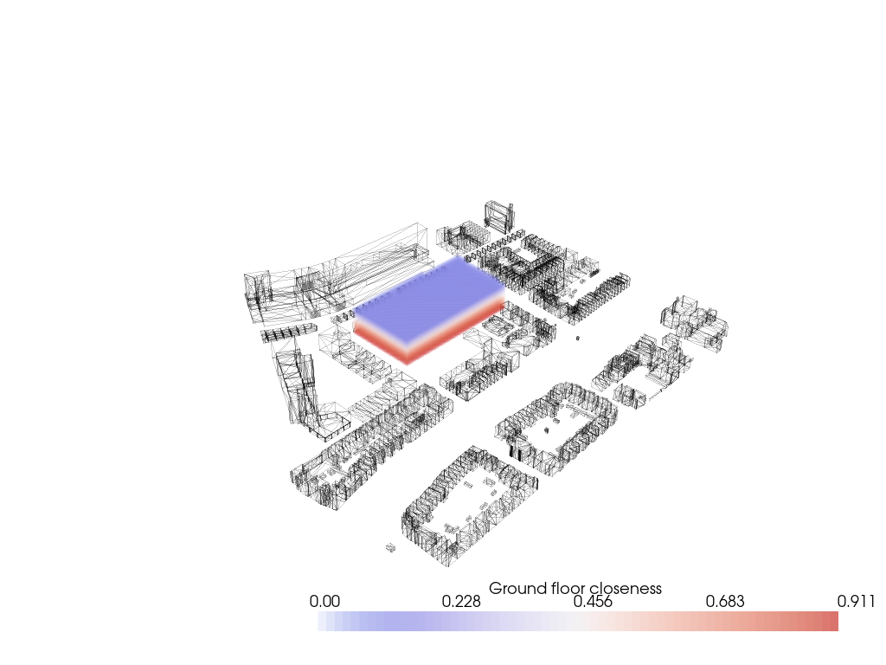
Fig. 41 Distance to Ground

Fig. 42 Noise

Fig. 43 Sun Access
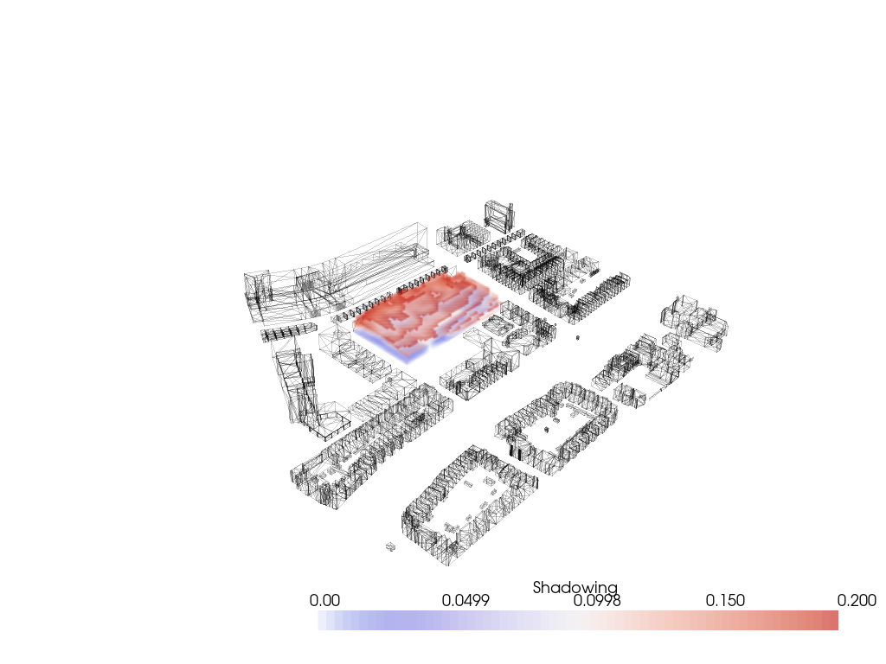
Fig. 44 Shadow Casting

Fig. 45 View on Greenery

Fig. 46 View on Greenery
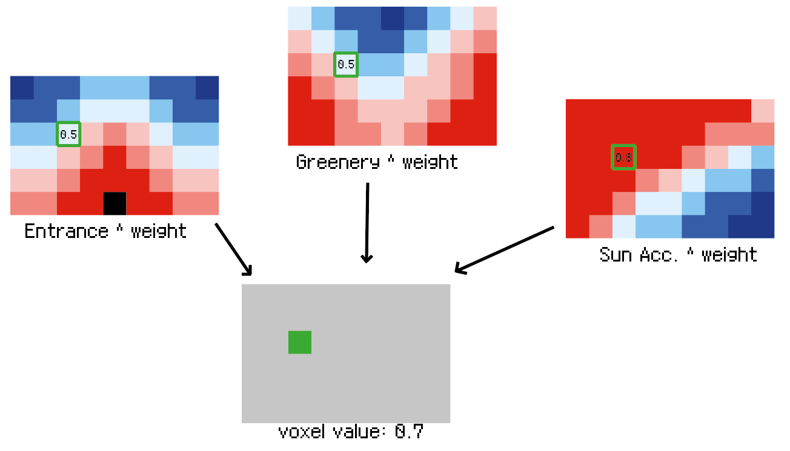
Fig. 47 Evaluate voxel
Fig. 48 Original initialization of the agents

Fig. 49 Improved initialization of the agents

Fig. 50 Change value

Fig. 51 Gif of the squareness

Fig. 52 Squareness
Fig. 53 GIF Prevent floating agents

Fig. 54 Prevent floating agents

Fig. 55 Building depth

Fig. 56 Gif of the building depth (3)
Fig. 57 Gif of the building depth (6)

Fig. 58 Mass variant, both functions off

Fig. 59 Mass variant, float function on

Fig. 60 Mass variant, both functions on

Fig. 61 Final mass, float off, depth on

Fig. 62 Student house growth
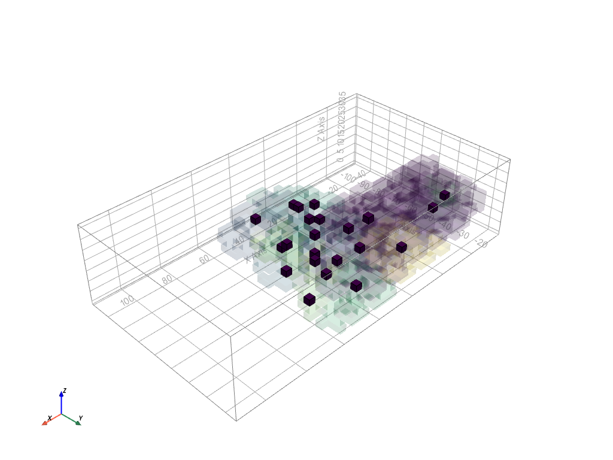
Fig. 63 Centers of clusters

Fig. 64 Shafts

Fig. 65 Paths

Fig. 66 Gif of the massing
Fig. 67 Final mass

Fig. 68 Legend 1
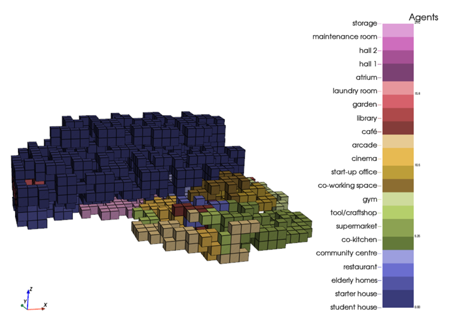
Fig. 69 Legend 2

Fig. 70 Legend 3
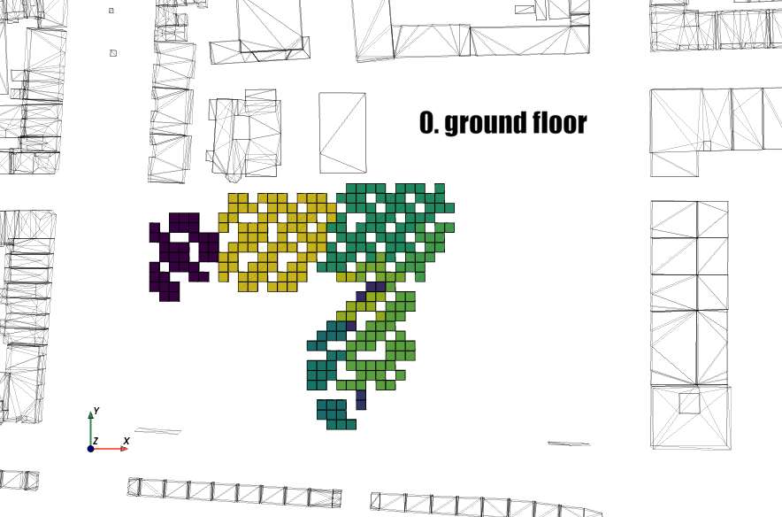
Fig. 71 Floor plan gif
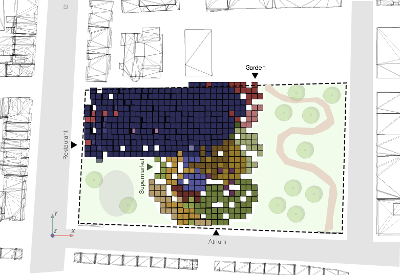
Fig. 72 Top view of the building in context with the city
Fig. 73 Flow diagram notebooks

Fig. 74 Facade tiles
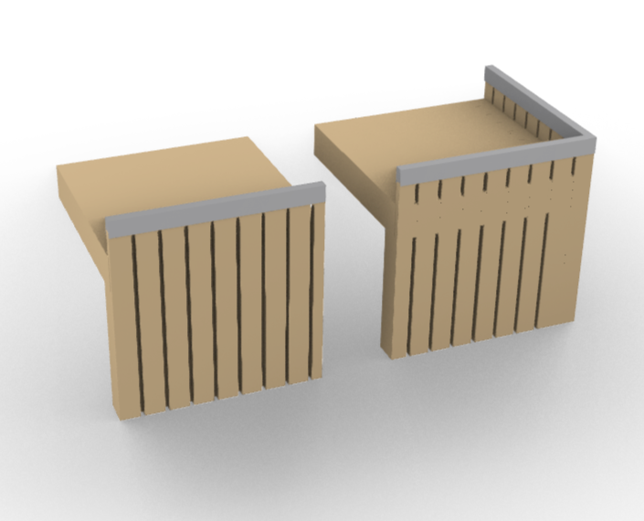
Fig. 75 Eave tiles

Fig. 76 Interior floor tiles

Fig. 77 Interior corner tiles

Fig. 78 Roof tiles

Fig. 79 Balcony tiles

Fig. 80 Example combination
Fig. 81 Flowchart architectural floor plan generator
Fig. 82 Catalogue
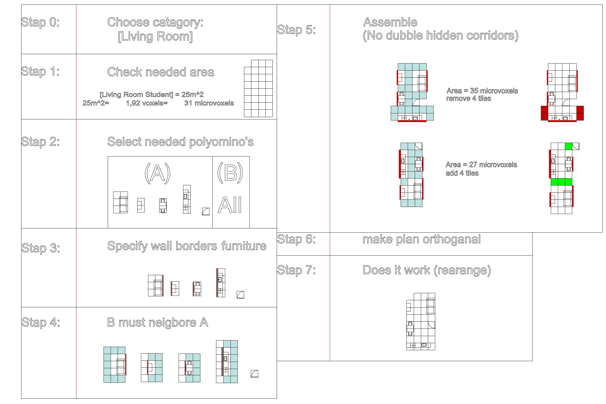
Fig. 83 Catalogue game in steps (Living Room)

Fig. 84 Catalogue game in steps (Kitchen)

Fig. 85 Catalogue game in steps (Café)

Fig. 86 Floor plan living, laundry, bedroom and private toilet

Fig. 87 Floor plan with hidden corridors of living, laundry, bedroom and private toilet

Fig. 88 Floor plan library, shops, kitchen and gym
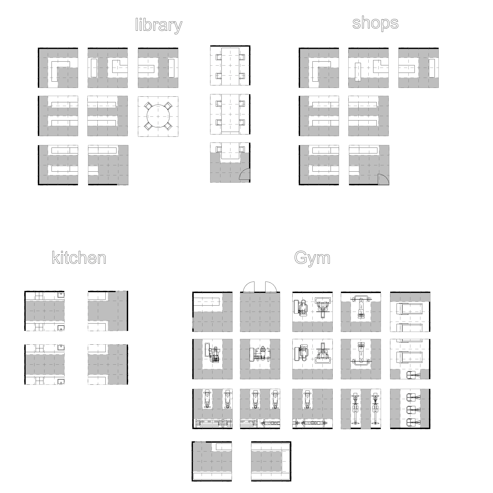
Fig. 89 Floor plan with hidden corridors of library, shops, kitchen and gym

Fig. 90 Floor plan restaurant, public toilet and workspaces

Fig. 91 Floor plan with hidden corridors of restaurant, public toilet and workspaces
Fig. 92 Render birds eye view

Fig. 93 Render North

Fig. 94 Render East

Fig. 95 Render South

Fig. 96 Render West
Fig. 97 Render NW

Fig. 98 Render South birds eye

Fig. 99 Render Top

Fig. 100 Render Balcony
Fig. 101 Render Context

Fig. 102 Render Context South

Fig. 103 Render Context East

Fig. 104 Render Context North

Fig. 105 Render close up

Fig. 106 Render close up
Fig. 107 Render close up

Fig. 108 Reflection visualized, showing the division between public and private.

Fig. 109 Greenery

Fig. 110 Noise

Fig. 111 Sun access. (Residential area is marked in green in the pictures above)
Fig. 112 Highline, New York
Fig. 113 Top view of the context, showing connectivity with main roads

Fig. 114 Poster